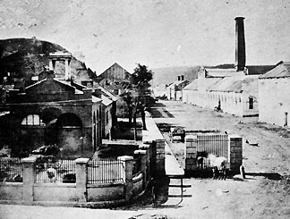

|
In 1858, Stephen Douglas was up for reelection to the
Senate. National attention focused on the election, in which
he opposed Westerner Abraham Lincoln. The contest was going
to be a battleground for popular sovereignty. Together they
offered 193 speeches, but the most attention was garnered by
a series of seven debates.
The Lincoln-Douglas Debates
In the debates, Lincoln asked Douglas to define
popular sovereignty in light of the Dred Scott decision, which seemed
to invalidate Douglass' compromise position.
Douglas responded with his Freeport doctrine, in which he
said public opinion was more important than even the
Constitution, and that citizens of a state would be able to
decide the fate of slavery for themselves no matter what the
Supreme Court said. Lincoln and Douglas also got involved in
complex arguments about slavery, in which both men took
practical positions. Douglas was privately opposed to
slavery, but stuck to his popular sovereignty guns. Lincoln
openly opposed slavery, but pledged that he would not
|

Harpers Ferry. John Brown was captured in the building
on the left (in the foreground).
|
interfere with it where it already existed, and that he did
not favor civil rights for blacks. Douglas won the contest,
but barely, and the arguments enumerated by Lincoln became a
major statement of the position of the new Republican
party.
John Brown Raids Harpers Ferry
As the two parties prepared for the election of 1860, there
were several festering wounds. The Democrats were badly
split, and the Kansas situation was still a sore spot. Then,
just three weeks before the elections of 1859, John Brown
decided that he would capture the federal arsenal at
Harpers Ferry in hopes of inspiring a slave revolt. The
raid failed, and Brown was hanged. He became a martyr in the
North and a rallying point in the South.
A Republican is Elected President
The Republicans had always been a sectional party, and since
1856 the Democrats had been the only national party.
Events conspired to make sure that that would no longer be
the case. Douglas, the only Democratic politician of
national stature to take a compromise position, had been
undermined, as had his doctrine of popular sovereignty. When
the Democratic convention met, it was unable to select a
candidate, and delegates from the Southern states withdrew.
A second convention, held in June without Southerners,
nominated Douglas. The Southern Democrats nominated John C.
Breckinridge. At the same time, conservatives from the
border states nominated John Bell. The Democrats were
finished, and needed only to wait for the Republican
convention to see who would win the election. Several
leading Republicans were rejected for various reasons;
Seward for being too radical, Chase for the same reason,
Edward Bates for not having enough broad appeal. Lincoln
was selected as the one candidate everyone could agree on.
The election was clearly sectional. Douglas won only
Missouri outright, Breckinridge won the Deep South, and
Lincoln won the North and with it the election despite
garnering zero votes in the Deep South, as he did not even
appear on the ticket.
South Carolina Secedes
The South had often threatened to secede, so people did not
heed threats to do so made before the election. Then, a
month after Lincoln's election, South Carolina seceded and

Poster printed by the Charleston Mercury
|
was followed two months later by the rest of the lower
South. By the end of February 1861, a provisional
government had been formed and Jefferson Davis had been
chosen president. It is probable that a majority of southern
whites opposed secession, but the ultras controlled the
day.
The President condemned the secession, but took no action
to stop it. In the Congress, both houses elected committees
to find a compromise. The Senate committee, led by John
Crittenden of Kentucky, offered the first proposal. The
Crittenden proposal was a series of amendments that would
basically make slavery legal in all the territories. It was
thus unacceptable to Republicans and Douglas Democrats,
particularly after Lincoln made it clear that he wanted no
compromises. So, no compromise was reached, and on January
18, 1861, the Senators from the states that had seceded
resigned.
The Civil War Begins
Lincoln left Springfield on February 11, making speeches
along the way in which he declared his belief in the primacy
of the Union. He appointed a cabinet designed to address
all of the factions that were a part of the Republican
party. Shortly after his arrival, Lincoln became aware of
two important realities. First, the border states were
barely holding onto the Union. Second, Fort Sumter in South
Carolina would only be able to hold out until April 15
before exhausting its supplies. To give up the Fort would be
a major defeat, but to supply it would certainly precipitate
war and cause the border states to leave the Union.
Lincoln, after major discussions with his Cabinet, decided
to supply it, and on April 12, 1861, the Confederates fired.
33 hours later, the fort was surrendered. Virginia,
Arkansas, North Carolina and Tennessee immediately seceded
and the Civil War was under way.
Source: Christopher Bates for the History 139A website
|